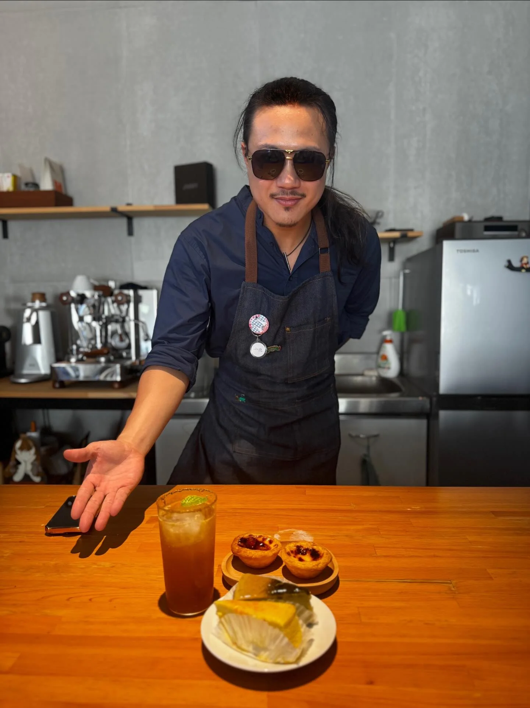
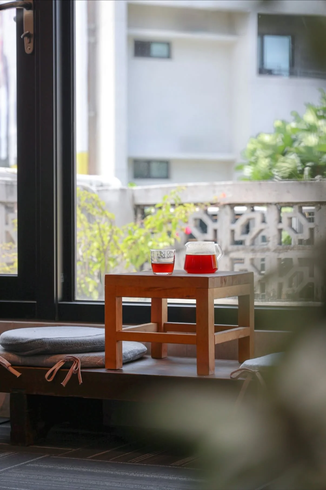

朱・異想不開
Zhu Yi Xiang Bu Kai
閱讀
書寫
靜心
我是朱朱，經營個人品牌「朱・異想不開」，目前於花蓮的小隐藝文空間駐點實踐這個計畫。
小時候，我們總有天馬行空的想法，任憑想像飛翔，再怎麼異想天開也無妨。但隨著年紀漸長，世俗、常識與責任逐漸將人捆綁，在忙碌與交際之中，許多人慢慢遺失了自己，連「異想」都變得困難。
「在這個過快的世界裡，仍需要一些不刺眼的光，為人留下一個能誠實存在的空間。」
「朱・異想不開」是一個實驗性的存在。一個不急著給答案、不被形式限制的角落，讓想不開世間煩惱的大人們，能夠與自己好好相處。
我以文字、閱讀、書寫與靜心的方式，陪伴人慢下來。或許發呆，或許寫一張明信片寄給未來的自己；配上一杯茶或咖啡，讓連結自然發生，或只是安靜地，讓自己陪伴自己。
在這裡，自在即可。
記憶・書架



